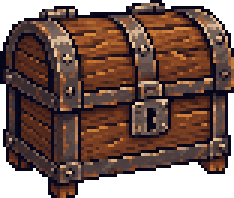
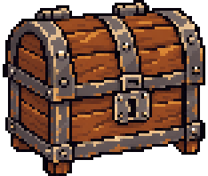
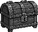
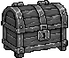
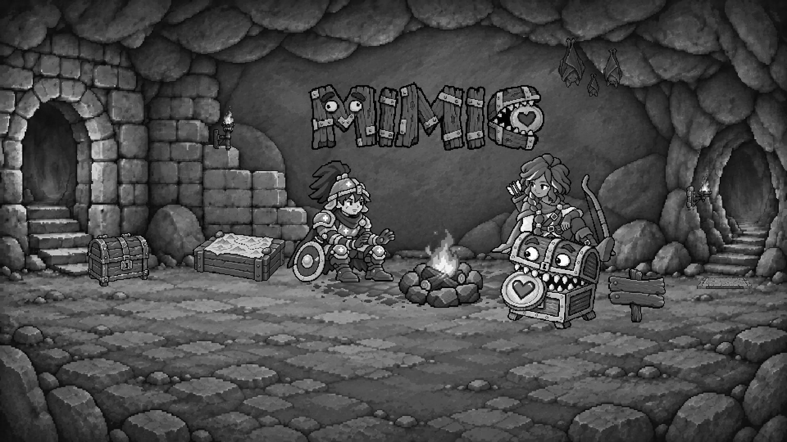

Landing — 普通寶箱材質比較
awaiting-calibration · reviewOnly: true · runtimePromotion: false
只比較普通寶箱材質與像素表現。圓拱蓋、朝向、105／284 落點與 78×66 圖層不變；兩版標題、手機、人物與其他道具保持原樣。
先看實際小圖，再看放大與整個場景。不是寶箱位置或完整 Scenes 核准。
實際 ImageGen prompt · 透明新來源 · manifest
78×66 實際輸出

同倍率放大


真實灰階小圖


戰士顆粒參照


桌機原稿
字標 288 × 84 logical px；左上 376, 100；輸出 1920 × 1080。
桌機：戰士基準新稿
字標 288 × 84 logical px；左上 376, 100；輸出 1920 × 1080。
手機：維持現狀
字標 148 × 98 logical px；左上 130, 59；輸出 390 × 600。
三張真實灰階場景輸出



既有字標參照與新來源
下圖為未套用共同色調的來源；場景使用同一 brightness 0.82／saturation 0.72 整理，沒有 CSS 個別亮度差異。

新交錯透明 ImageGen source · 實際 prompt
已核准身份與顆粒參照


等待寶箱素材視覺審核
請確認小圖的木板／鐵帶分區、像素顆粒與暖光是否融入戰士與房間。標題位置已核准且固定；本輪新素材尚未核准。登入、木牌及 CTA 僅使用原 review 錨點，不連接認證、互動或帳務。
exact SHA-256 與實際尺寸
landing-title-placement.manifest.json | df90822ccb7fdd671899f08ec70c0d1535f16393d5b0ca4007aac0642d7eb1b5 |
samples/derivations/landing-war-room/sources/ordinary-chest-v01-source.png1402×1122 | 8308b9bf28f164f3b6f37b190eb6330345d6787794f9e8e1b20af899c2f96011 |
samples/landing-warm-rest/layers/A-desktop/warrior.png132×149 | fa155d31d7668e7d3660f89f4a90de865ca978abd725aa8bc5f591342eb252e1 |
samples/avatar-classes/masters/warrior.png512×512 | cad8b04c066a149a081095ea7507091fd92fa65fdfd95ca9a40366cfcdbb9447 |
samples/derivations/landing-chest-material-v01/ordinary-chest-source.png1402×1122 | b82139f77cb2cd10426caa1831f374eb9b65f85c0c5bb59deecdf9dd41ae1de9 |
samples/derivations/landing-chest-material-v01/prompt.md | 7faf462d0572b02a500888e876ba4f0c02e5a2bf79dbb6f01fc4e8f7a34434b6 |
samples/derivations/landing-chest-material-v01/lineage.json | d0caeb184e417674112f9e980b7efa533e09d7dac19238273dcf20e45fbc8ce1 |
landing-title-placement-review.html | da5a81e41a8b3f5bda76732ac6c611731d87f386819883816250b5542c515c71 |
compose-landing-chest-material.mjs | ec4c4c2c64cad46316d28f185836bfd7659c7ee6d841e8db45b7be2b4f6af242 |
landing-chest-raster.mjs | e65cabaefeba0532516c0d8ee9576c838e5eb40d53045871ff7dfdcc978cc08a |
render-landing-chest-material.mjs | 2e8b7af3b9fd713c6a00fbb320ce97dd178e0f2439d07e998eb3e222770c2910 |
samples/landing-warm-rest/layers/A-desktop/chest.png78×66 | c3026375ca3821478a822030dda1c8463e8750d09048f791e40449b7dda12753 |
samples/landing-chest-material-v01/ordinary-chest.png78×66 | fc2a8eb5b6337658e3056cc4cfc014328a4ec0c2920d800f9daa37451aef729b |
samples/landing-chest-material-v01/ordinary-chest-gray.png78×66 | 865c0fbcde78787016299dcc55b014f0d5fb35af55d10f2d3d12493e42ea54ce |
samples/landing-chest-material-v01/old-chest-gray.png78×66 | 2026c689b581adca2deb1f957079ae646988c63ea46986190d3e101524ef4bdf |
samples/landing-chest-material-v01/old-chest-3x.png234×198 | 173bd44fc57115bafd7fd8a762842b06b1b59740448d357ec35d315826ab8c5f |
samples/landing-chest-material-v01/ordinary-chest-3x.png234×198 | 391bea76f96094d783de541e40657ee133e29a374e1dcfe36d197de7464b64c1 |
samples/landing-chest-material-v01/desktop-logical.png960×540 | 458e28654b436179472110fa97b904703e9dfa73cefc4cccd8bc077fa05a8c19 |
samples/landing-chest-material-v01/desktop-color.png1920×1080 | 00893b2dbff9c6beefd7302765586ac823220f54692fc8ccb6ca1b7855093a75 |
samples/landing-chest-material-v01/desktop-gray.png1920×1080 | 20e07fa50d348d181aa8baf01f7398017df7f877675e1c9f5ec18888736d2c8e |
samples/landing-title-placement-v01/desktop-single-logical.png960×540 | 08dca5cb9f13c0a4ede1322f4e8f93295cae7b39a36438509a1286f12f87643f |
samples/landing-title-placement-v01/desktop-single-color.png1920×1080 | 3208e934a247796a438f029458a4e82fe1a229dd8c8c5208d8a8a903c60923c4 |
samples/landing-title-placement-v01/desktop-single-gray.png1920×1080 | 60461e78796adb24ca9fe64d1981447cfd280d8537dbddab2200bfd07e344093 |
samples/landing-a-title/wordmarks/desktop-single.png288×84 | 4ecc5bc6788f34854aac81a54d35b85fad9648c9f9d6499200f825246976ff31 |
samples/landing-chest-material-v01/desktop-logical.png960×540 | 458e28654b436179472110fa97b904703e9dfa73cefc4cccd8bc077fa05a8c19 |
samples/landing-chest-material-v01/desktop-color.png1920×1080 | 00893b2dbff9c6beefd7302765586ac823220f54692fc8ccb6ca1b7855093a75 |
samples/landing-chest-material-v01/desktop-gray.png1920×1080 | 20e07fa50d348d181aa8baf01f7398017df7f877675e1c9f5ec18888736d2c8e |
samples/landing-a-title/wordmarks/desktop-single.png288×84 | 4ecc5bc6788f34854aac81a54d35b85fad9648c9f9d6499200f825246976ff31 |
samples/landing-title-placement-v01/phone-staggered-logical.png390×600 | dae2872edddfa14d68b37c7b5475c4680381db0826dc417cb8a07ee370385ecf |
samples/landing-title-placement-v01/phone-staggered-color.png390×600 | dae2872edddfa14d68b37c7b5475c4680381db0826dc417cb8a07ee370385ecf |
samples/landing-title-placement-v01/phone-staggered-gray.png390×600 | 317ad09e18904b7bca29496418a59a0aa5f9c72f611c4d23c83661fbe536c2ac |
samples/landing-a-title/wordmarks/phone-staggered.png148×98 | 8fd7d677df46cc77478518de2a9f68ff77b8ae4d28deb25e6b11ad5ba6ee8f1c |